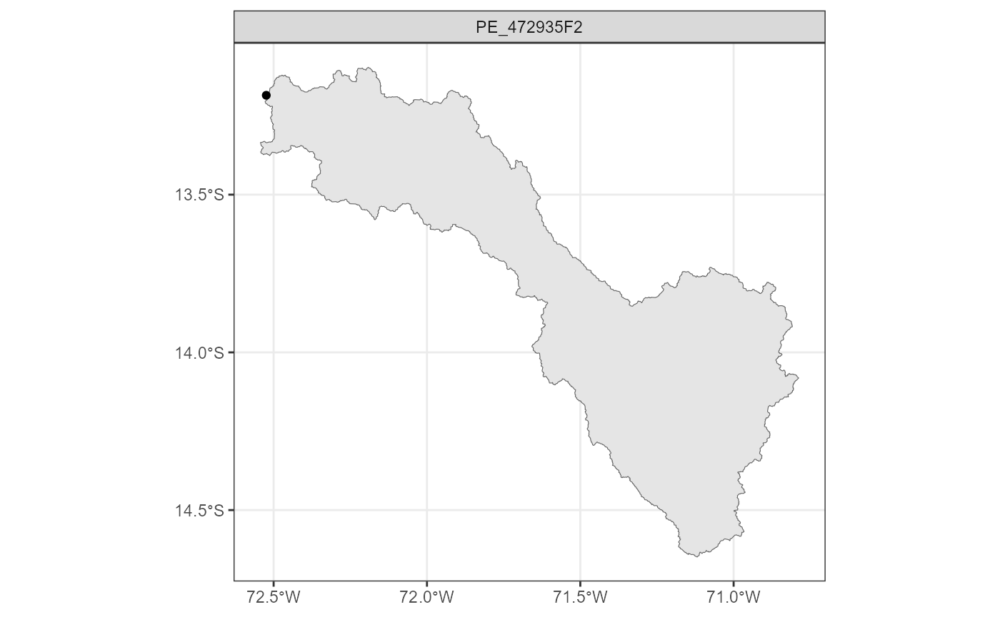
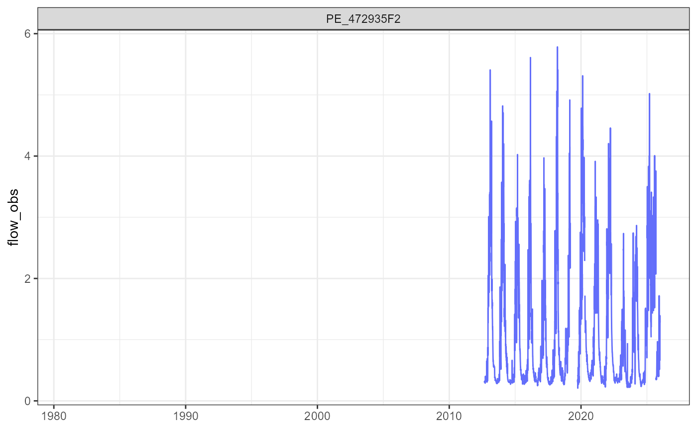
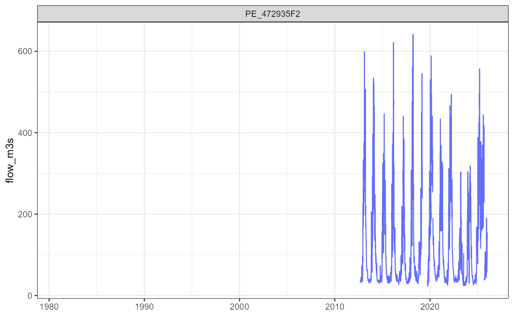
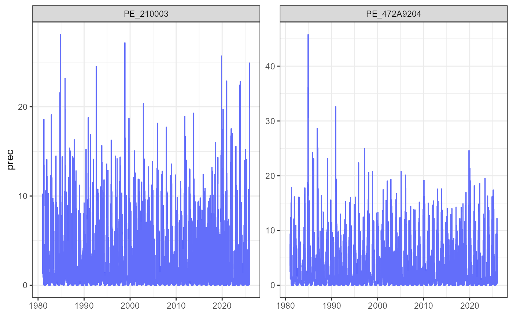
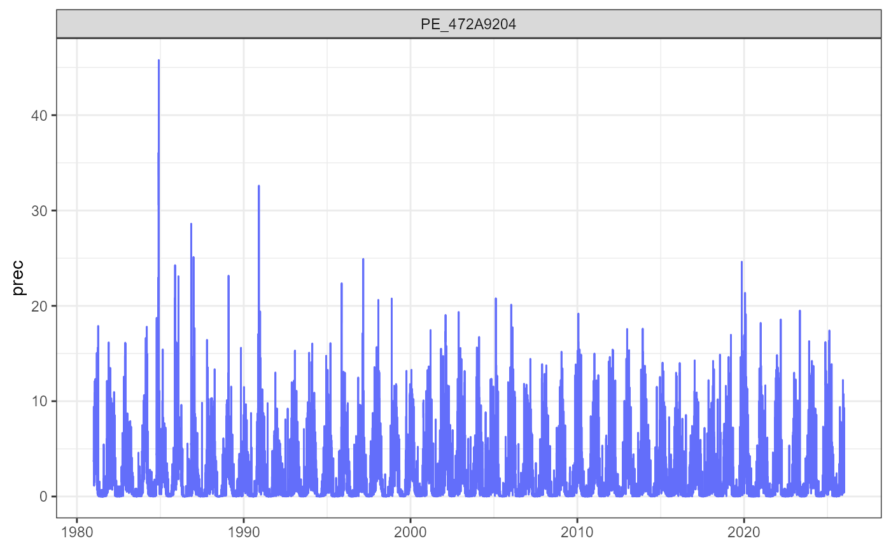

Introduction
RCamelsPE is an R package designed to read, process, and
visualize data from the CAMELS-PE dataset:
Catchment Attributes and Meteorology for Large-sample Studies –
Peru.
This vignette provides a practical introduction to the package, guiding users through a typical workflow:
- explore available basins
- inspect their physical and climatic characteristics
- analyze hydroclimatic time series
Installation
Before using the package, you need to install it from GitHub. This step only needs to be done once.
# install.packages("remotes")
remotes::install_github("hllauca/RCamelsPE")
#> Using GitHub PAT from the git credential store.
#> Downloading GitHub repo hllauca/RCamelsPE@HEAD
#> cpp11 (0.5.2 -> 0.5.4) [CRAN]
#> sf (1.0-21 -> 1.1-0) [CRAN]
#> Installing 2 packages: cpp11, sf
#> Installing packages into 'C:/Users/hllauca/AppData/Local/Temp/RtmpWeY3jz/temp_libpath43e81c57490d'
#> (as 'lib' is unspecified)
#> package 'cpp11' successfully unpacked and MD5 sums checked
#> package 'sf' successfully unpacked and MD5 sums checked
#>
#> The downloaded binary packages are in
#> C:\Users\hllauca\AppData\Local\Temp\RtmpGGVDVb\downloaded_packages
#> ── R CMD build ─────────────────────────────────────────────────────────────────
#> checking for file 'C:\Users\hllauca\AppData\Local\Temp\RtmpGGVDVb\remotes54841d224b97\hllauca-RCamelsPE-c4f222d/DESCRIPTION' ... ✔ checking for file 'C:\Users\hllauca\AppData\Local\Temp\RtmpGGVDVb\remotes54841d224b97\hllauca-RCamelsPE-c4f222d/DESCRIPTION' (461ms)
#> ─ preparing 'RCamelsPE':
#> checking DESCRIPTION meta-information ... checking DESCRIPTION meta-information ... ✔ checking DESCRIPTION meta-information
#> ─ checking for LF line-endings in source and make files and shell scripts (452ms)
#> ─ checking for empty or unneeded directories
#> ─ building 'RCamelsPE_0.1.1.tar.gz'
#>
#>
#> Installing package into 'C:/Users/hllauca/AppData/Local/Temp/RtmpWeY3jz/temp_libpath43e81c57490d'
#> (as 'lib' is unspecified)Once installed, load the package into your R session:
Set the CAMELS-PE dataset path
CAMELS-PE is not included in the package, so you must specify the location of the dataset on your local system. This allows all functions to automatically locate the data.
set_camels_path("C:/Users/hllauca/Documents/CAMELS-PE")Explore available stations
We begin by loading the metadata, which contains all available gauging stations. This table is the entry point to the dataset.
stations <- read_metadata()
head(stations)
#> # A tibble: 6 × 9
#> gauge_id gauge_name gauge_lat gauge_lon gauge_elev gauge_region
#> <chr> <chr> <dbl> <dbl> <dbl> <chr>
#> 1 PE_472A9204 Chilca -13.2 -72.3 2770 Atlantic
#> 2 PE_210003 Huancasaya -15.1 -69.2 4327 Titicaca
#> 3 PE_204617 Huatiapa -16.0 -72.5 684 Pacific
#> 4 PE_472935F2 Intihuatana Km105 -13.2 -72.5 2166 Atlantic
#> 5 PE_210406 Puente Isla Cabanillas -15.5 -70.2 3837 Titicaca
#> 6 PE_270503 Puente Zapatilla -16.1 -69.6 3836 Titicaca
#> # ℹ 3 more variables: gauge_record_start <date>, gauge_record_end <date>,
#> # gauge_perc_obs <dbl>Each row represents a catchment, identified by a unique
gauge_id.
We select one basin to work with:
gauge_id <- 'PE_472935F2'
gauge_id
#> [1] "PE_472935F2"Read geospatial data
CAMELS-PE also includes spatial data for catchments and gauges.
These layers allow geographic visualization.
catchments <- read_geospatial("catchments")
gauges <- read_geospatial("gauges")Plot catchment location
Finally, we visualize the selected basin in its spatial context.
plot_catchments(
catchments = catchments,
gauges = gauges,
gauge_id = gauge_id
)
This helps understand:
where the basin is located
its geographic setting
its relation to other basins
Explore catchment attributes
CAMELS-PE includes multiple groups of attributes describing each basin. These attributes are essential for understanding hydrological behavior.
topo <- read_attributes("topographic")
head(topo)
#> # A tibble: 6 × 8
#> gauge_id area perimeter elev_min elev_max elev_mean elev_median slope_mean
#> <chr> <dbl> <dbl> <dbl> <dbl> <dbl> <dbl> <dbl>
#> 1 PE_472A92… 9188. 284. 2762 6317. 4210. 4216. 11.3
#> 2 PE_210003 2009. 230. 4312. 6030. 4659. 4620. 17.8
#> 3 PE_204617 13225. 1959. 685. 6415. 4213. 4496. 12.7
#> 4 PE_472935… 9576. 98.7 2144 6317. 4197. 4208. 11.5
#> 5 PE_210406 2867. 164. 3826. 5426. 4467. 4452. 3.24
#> 6 PE_270503 391. 149. 3825. 4616. 3991. 3954. 3.96
clim <- read_attributes("climatic")
head(clim)
#> # A tibble: 6 × 11
#> gauge_id p_mean pet_mean aridity p_seasonality high_prec_freq high_prec_dur
#> <chr> <dbl> <dbl> <dbl> <dbl> <dbl> <dbl>
#> 1 PE_472A9204 2.30 3.36 1.46 0.99 7.11 1.38
#> 2 PE_210003 1.84 2.91 1.58 0.98 7.78 1.35
#> 3 PE_204617 1.50 3.64 2.42 0.934 19.6 2.00
#> 4 PE_472935F2 2.30 3.35 1.46 0.991 6.58 1.38
#> 5 PE_210406 2.06 3.35 1.63 0.96 16.4 1.44
#> 6 PE_270503 2.18 3.19 1.46 0.954 17.2 1.54
#> # ℹ 4 more variables: high_prec_timing <chr>, low_prec_freq <dbl>,
#> # low_prec_dur <dbl>, low_prec_timing <chr>Other available attribute groups include:
hyd <- read_attributes(type = "hydrological")
land <- read_attributes(type = "landcover")
geo <- read_attributes(type = "geologic")
soil <- read_attributes(type = "soil")
human <- read_attributes(type = "human_intervention")Now we extract the attributes corresponding to the selected basin:
topo_sel <- topo[topo$gauge_id == gauge_id, ]
clim_sel <- clim[clim$gauge_id == gauge_id, ]
topo_sel
#> # A tibble: 1 × 8
#> gauge_id area perimeter elev_min elev_max elev_mean elev_median slope_mean
#> <chr> <dbl> <dbl> <dbl> <dbl> <dbl> <dbl> <dbl>
#> 1 PE_472935F2 9576. 98.7 2144 6317. 4197. 4208. 11.5
clim_sel
#> # A tibble: 1 × 11
#> gauge_id p_mean pet_mean aridity p_seasonality high_prec_freq high_prec_dur
#> <chr> <dbl> <dbl> <dbl> <dbl> <dbl> <dbl>
#> 1 PE_472935F2 2.30 3.35 1.46 0.991 6.58 1.38
#> # ℹ 4 more variables: high_prec_timing <chr>, low_prec_freq <dbl>,
#> # low_prec_dur <dbl>, low_prec_timing <chr>These variables provide insight into the system:
Topography controls flow pathways and energy gradients
Climate defines water input and atmospheric demand
Read hydroclimatic time series
Next, we load daily time series for the selected catchment.
This includes key hydroclimatic variables such as precipitation,
temperature, evapotranspiration, and streamflow. Additional variables
are also available in CAMELS-PE (e.g., air temperature, potential
evapotranspiraton, simulated streamflow, solar radiation and vapor
pressure), and can be selected using the vars argument.
ts <- read_timeseries(
gauge_id = gauge_id,
vars = c("date", "gauge_id", "prec", "flow_obs")
)
head(ts)
#> # A tibble: 6 × 4
#> date gauge_id prec flow_obs
#> <date> <chr> <dbl> <dbl>
#> 1 1981-01-01 PE_472935F2 3.69 NA
#> 2 1981-01-02 PE_472935F2 3.71 NA
#> 3 1981-01-03 PE_472935F2 4.86 NA
#> 4 1981-01-04 PE_472935F2 9.22 NA
#> 5 1981-01-05 PE_472935F2 2.39 NA
#> 6 1981-01-06 PE_472935F2 3.18 NAPlot precipitation
We first explore precipitation, which is the main driver of the hydrological system.
plot_timeseries(ts, variable = "prec", linewidth = 0.4)
This plot helps identify:
seasonal patterns
variability across years
extreme events
Plot streamflow
Now we analyze observed streamflow, which integrates all basin processes.
plot_timeseries(ts, variable = "flow_obs")
#> Warning: Removed 11566 rows containing missing values or values outside the scale range
#> (`geom_line()`).
Streamflow reflects:
rainfall input
soil moisture dynamics
groundwater contributions
river routing
Units of streamflow
In CAMELS-PE, both observed and simulated streamflow
(flow_obs and flow_sim) are expressed in
mm/day.
This unit represents runoff depth over the catchment area and is commonly used in hydrology because it allows comparison between basins of different sizes.
However, in many applications, streamflow is required in
m³/s.
To convert from mm/day to m³/s, the catchment area must be used:
Where:
-
= streamflow in mm/day
-
= catchment area in km²
- 86400 = seconds per day
# Read catchment area from topographic attributes
area_km2 <- topo_sel$area
# Convert flow from mm/day to m3/s
ts$flow_m3s <- ts$flow_obs * area_km2 * 1e6 / (1000 * 86400)
plot_timeseries(ts, variable = "flow_m3s")
#> Warning: Removed 11566 rows containing missing values or values outside the scale range
#> (`geom_line()`).
Compare multiple catchments
To understand spatial variability, we can analyze several basins at once.
ts_multi <- read_timeseries(
gauge_id = c("PE_472A9204", "PE_210003"),
vars = c("date", "gauge_id", "prec")
)Plot them using faceting:
plot_timeseries(ts_multi, variable = "prec", facet = TRUE)
Each panel represents a different catchment, allowing comparison of hydrological regimes.
Filter a specific catchment
Even when working with multiple basins, you can easily focus on one.
plot_timeseries(
ts_multi,
variable = "prec",
gauge_id = "PE_472A9204"
)
Typical workflow
A minimal workflow with RCamelsPE is:
library(RCamelsPE)
set_camels_path("C:/Users/hllauca/Documents/CAMELS-PE")
stations <- read_metadata()
gauge_id <- stations$gauge_id[1]
ts <- read_timeseries(
gauge_id = gauge_id,
vars = c("date", "gauge_id", "prec", "flow_obs")
)
plot_timeseries(ts, variable = "flow_obs")
#> Warning: Removed 14605 rows containing missing values or values outside the scale range
#> (`geom_line()`).
Summary
With RCamelsPE, users can:
access hydroclimatic data quickly
explore basin characteristics
visualize time series and spatial data
compare multiple catchments
This makes the package suitable for:
hydrological analysis
teaching and training
model development
large-sample hydrology studies
Notes
To run the examples, download the dataset and set the correct path
using set_camels_path().